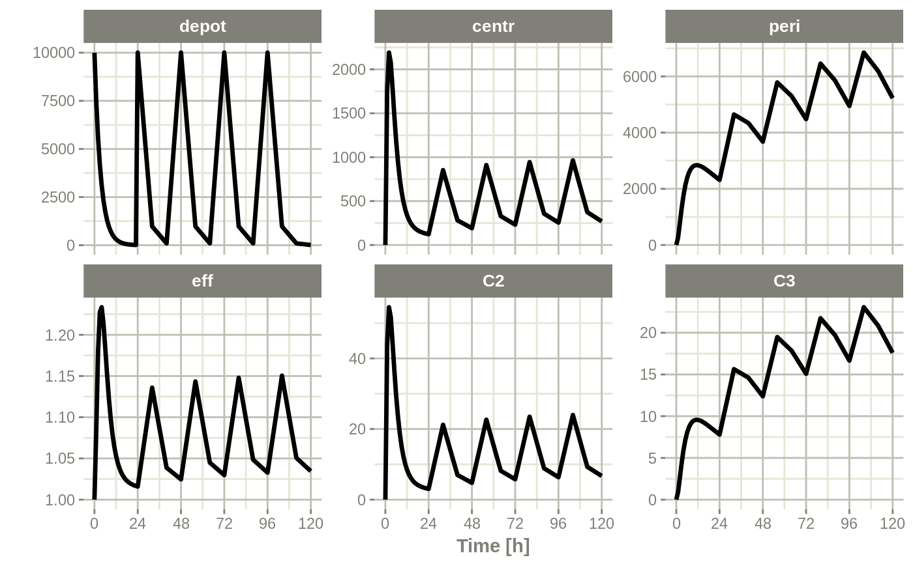

RxODE.RdCreate a dynamic ODE-based model object suitably for translation into fast C code
RxODE(model, modName = basename(wd), wd = getwd(), filename = NULL, extraC = NULL, debug = FALSE, calcJac = NULL, calcSens = NULL, collapseModel = FALSE, package = NULL, ...)
| model | This is the ODE model specification. It can be:
(see also the |
|---|---|
| modName | a string to be used as the model name. This string
is used for naming various aspects of the computations,
including generating C symbol names, dynamic libraries,
etc. Therefore, it is necessary that |
| wd | character string with a working directory where to
create a subdirectory according to |
| filename | A file name or connection object where the
ODE-based model specification resides. Only one of |
| extraC | Extra c code to include in the model. This can be
useful to specify functions in the model. These C functions
should usually take |
| debug | is a boolean indicating if the executable should be compiled with verbose debugging information turned on. |
| calcJac | boolean indicating if RxODE will calculate the Jacobain according to the specified ODEs. |
| calcSens | boolean indicating if RxODE will calculate the sensitivities according to the specified ODEs. |
| collapseModel | boolean indicating if RxODE will remove all LHS variables when calculating sensitivities. |
| package | Package name for pre-compiled binaries. |
| ... | ignored arguments. The “Rx” in the name The ODE-based model specification may be coded inside a character
string or in a text file, see Section RxODE Syntax below for
coding details. An internal For evaluating |
An object (closure) of class “RxODE” (see Chambers and Temple Lang (2001))
consisting of the following list of strings and functions:
the name of the model (a copy of the input argument).
a character string holding the source model specification.
a function that returns a list with 3 character
vectors, params, state, and lhs of variable names used in the model
specification. These will be output when the model is computed (i.e., the ODE solved by integration).
this function solves (integrates) the ODE. This
is done by passing the code to rxSolve.
This is as if you called rxSolve(RxODEobject, ...),
but returns a matrix instead of a rxSolve object. params: a numeric named vector with values for every parameter
in the ODE system; the names must correspond to the parameter
identifiers used in the ODE specification; events: an eventTable object describing the
input (e.g., doses) to the dynamic system and observation
sampling time points (see eventTable); inits: a vector of initial values of the state variables
(e.g., amounts in each compartment), and the order in this vector
must be the same as the state variables (e.g., PK/PD compartments); stiff: a logical (TRUE by default) indicating whether
the ODE system is stiff or not. For stiff ODE systems (stiff = TRUE), RxODE uses
the LSODA (Livermore Solver for Ordinary Differential Equations)
Fortran package, which implements an automatic method switching
for stiff and non-stiff problems along the integration interval,
authored by Hindmarsh and Petzold (2003). For non-stiff systems (stiff = FALSE), RxODE uses DOP853,
an explicit Runge-Kutta method of order 8(5, 3) of Dormand and Prince
as implemented in C by Hairer and Wanner (1993). trans_abs: a logical (FALSE by default) indicating
whether to fit a transit absorption term
(TODO: need further documentation and example); atol: a numeric absolute tolerance (1e-08 by default); rtol: a numeric relative tolerance (1e-06 by default).e The output of “solve” is a matrix with as many rows as there
are sampled time points and as many columns as system variables
(as defined by the ODEs and additional assignments in the RxODE model
code).
a function that (naively) checks for model validity, namely that the C object code reflects the latest model specification.
a string with the version of the RxODE
object (not the package).
a function with one force = FALSE argument
that dynamically loads the object code if needed.
a function with no argument that unloads the model object code.
removes all created model files, including C and DLL files.
The model object is no longer valid and should be removed, e.g.,
rm(m1).
deprecated, use solve.
deprecated.
deprecated.
deprecated.
internal (not user callable) function.
An RxODE model specification consists of one or more
statements terminated by semi-colons, ‘;’, and
optional comments (comments are delimited by # and an
end-of-line marker). NB: Comments are not allowed inside
statements.
A block of statements is a set of statements delimited by curly
braces, ‘{ ... }’. Statements can be either
assignments or conditional if statements. Assignment
statements can be: (1) “simple” assignments, where the left
hand is an identifier (i.e., variable), (2) special
“time-derivative” assignments, where the left hand specifies
the change of that variable with respect to time e.g.,
d/dt(depot), or (3) special “jacobian” assignments,
where the left hand specifies the change of of the ODE with respect
to one of the parameters, e.g. df(depot)/dy(kel). The
“jacobian” assignments are not required, and are only useful
for very stiff differential systems.
Expressions in assignment and ‘if’ statements can be
numeric or logical (no character expressions are currently
supported). Numeric expressions can include the following numeric
operators (‘+’, ‘-’, ‘*’,
‘/’, ‘^’), and those mathematical
functions defined in the C or the R math libraries (e.g.,
fabs, exp, log, sin). (Notice that the
modulo operator ‘%’ is currently not supported.)
Identifiers in an RxODE model specification can refer to:
state variables in the dynamic system (e.g., compartments in a pharmacokinetics/pharamcodynamics model);
implied input variable, t (time),
podo (oral dose, for absorption models), and
tlast (last time point);
model parameters, (ka rate of absorption, CL
clearance, etc.);
pi, for the constant pi.
others, as created by assignments as part of the model specification.
Identifiers consists of case-sensitive alphanumeric characters, plus the underscore ‘_’ character. NB: the dot ‘.’ character is not a valid character identifier.
The values of these variables at pre-specified time points are
saved as part of the fitted/integrated/solved model (see
eventTable, in particular its member function
add.sampling that defines a set of time points at which to
capture a snapshot of the system via the values of these variables).
The ODE specification mini-language is parsed with the help of the
open source tool dparser, Plevyak (2015).
Chamber, J. M. and Temple Lang, D. (2001) Object Oriented Programming in R. R News, Vol. 1, No. 3, September 2001. https://cran.r-project.org/doc/Rnews/Rnews_2001-3.pdf.
Hindmarsh, A. C. ODEPACK, A Systematized Collection of ODE Solvers. Scientific Computing, R. S. Stepleman et al. (Eds.), North-Holland, Amsterdam, 1983, pp. 55-64.
Petzold, L. R. Automatic Selection of Methods for Solving Stiff and Nonstiff Systems of Ordinary Differential Equations. Siam J. Sci. Stat. Comput. 4 (1983), pp. 136-148.
Hairer, E., Norsett, S. P., and Wanner, G. Solving ordinary differential equations I, nonstiff problems. 2nd edition, Springer Series in Computational Mathematics, Springer-Verlag (1993).
Plevyak, J.
dparser, http://dparser.sourceforge.net. Web. 12 Oct. 2015.
# Step 1 - Create a model specification ode <- " # A 4-compartment model, 3 PK and a PD (effect) compartment # (notice state variable names 'depot', 'centr', 'peri', 'eff') C2 = centr/V2; C3 = peri/V3; d/dt(depot) =-KA*depot; d/dt(centr) = KA*depot - CL*C2 - Q*C2 + Q*C3; d/dt(peri) = Q*C2 - Q*C3; d/dt(eff) = Kin - Kout*(1-C2/(EC50+C2))*eff; " m1 <- RxODE(model = ode) print(m1)#> RxODE 0.9.1-7 model named rx_b035b6cc0039e37feefedba57f72203a model (✔ ready). #> $state: depot, centr, peri, eff #> $params: V2, V3, KA, CL, Q, Kin, Kout, EC50 #> $lhs: C2, C3# Step 2 - Create the model input as an EventTable, # including dosing and observation (sampling) events # QD (once daily) dosing for 5 days. qd <- eventTable(amount.units = "ug", time.units = "hours") qd$add.dosing(dose = 10000, nbr.doses = 5, dosing.interval = 24) # Sample the system hourly during the first day, every 8 hours # then after qd$add.sampling(0:24) qd$add.sampling(seq(from = 24+8, to = 5*24, by = 8)) # Step 3 - set starting parameter estimates and initial # values of the state theta <- c(KA = .291, CL = 18.6, V2 = 40.2, Q = 10.5, V3 = 297.0, Kin = 1.0, Kout = 1.0, EC50 = 200.0) # init state variable inits <- c(0, 0, 0, 1); # Step 4 - Fit the model to the data qd.cp <- m1$solve(theta, events = qd, inits)#> Warning: Assumed order of inputs: depot, centr, peri, effhead(qd.cp)#> time C2 C3 depot centr peri eff #> [1,] 0 0.00000 0.0000000 10000.000 0.000 0.0000 1.000000 #> [2,] 1 43.99334 0.9113641 7475.157 1768.532 270.6751 1.083968 #> [3,] 2 54.50866 2.6510696 5587.797 2191.248 787.3677 1.179529 #> [4,] 3 51.65163 4.4243597 4176.966 2076.396 1314.0348 1.227523 #> [5,] 4 44.37513 5.9432612 3122.347 1783.880 1765.1486 1.233503 #> [6,] 5 36.46382 7.1389804 2334.004 1465.845 2120.2772 1.214084# This returns a matrix. Note that you can also # solve using name initial values. For example: inits <- c(eff = 1); qd.cp <- solve(m1, theta, events = qd, inits); print(qd.cp)#> ▂▂▂▂▂▂▂▂▂▂▂▂▂▂▂▂▂▂▂▂▂▂▂▂▂▂▂▂▂▂ Solved RxODE object ▂▂▂▂▂▂▂▂▂▂▂▂▂▂▂▂▂▂▂▂▂▂▂▂▂▂▂▂▂ #> ── Parameters ($params): ─────────────────────────────────────────────────────── #> #> V2 V3 KA CL Q Kin Kout EC50 #> 40.200 297.000 0.291 18.600 10.500 1.000 1.000 200.000 #> ── Initial Conditions ($inits): ──────────────────────────────────────────────── #> depot centr peri eff #> 0 0 0 1 #> ── First part of data (object): ──────────────────────────────────────────────── #> # A tibble: 37 x 7 #> time C2 C3 depot centr peri eff #> [h] <dbl> <dbl> <dbl> <dbl> <dbl> <dbl> #> 1 0 0 0 10000 0 0 1 #> 2 1 44.0 0.911 7475. 1769. 271. 1.08 #> 3 2 54.5 2.65 5588. 2191. 787. 1.18 #> 4 3 51.7 4.42 4177. 2076. 1314. 1.23 #> 5 4 44.4 5.94 3122. 1784. 1765. 1.23 #> 6 5 36.5 7.14 2334. 1466. 2120. 1.21 #> # … with 31 more rows #> ▂▂▂▂▂▂▂▂▂▂▂▂▂▂▂▂▂▂▂▂▂▂▂▂▂▂▂▂▂▂▂▂▂▂▂▂▂▂▂▂▂▂▂▂▂▂▂▂▂▂▂▂▂▂▂▂▂▂▂▂▂▂▂▂▂▂▂▂▂▂▂▂▂▂▂▂▂▂▂▂plot(qd.cp)